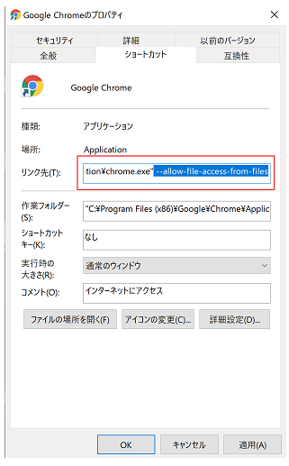

Config -> httpd.conf をクリックします。

Windowsの場合、次回以降すぐに起動できるよう、「ピン留め」しておくと便利です。
DocumentRoot 及び Directoryの値を、ダンおにを作成しているフォルダーに設定します。
※すでにXamppが導入済みで、Directoryを変えたくない場合はこちらをご覧ください。
例) C:/danoniplus ※"￥"は"/"に変更してください。

最初に以下A, Bどちらかの設定が必要です。
将来性を考慮し、Aの方法で作ることを推奨します。
https://www.apachefriends.org/jp/index.html
Config -> httpd.conf をクリックします。
Windowsの場合、次回以降すぐに起動できるよう、「ピン留め」しておくと便利です。
DocumentRoot 及び Directoryの値を、ダンおにを作成しているフォルダーに設定します。
※すでにXamppが導入済みで、Directoryを変えたくない場合はこちらをご覧ください。
例) C:/danoniplus ※"￥"は"/"に変更してください。
例えば、C:\danoniplus\danoni\danoni1.htmlにあるファイルを確認するときは
http://localhost/danoni/danoni1.htmlへアクセスすればOKです。
FileEtag None
RequestHeader unset If-Modified-Since
Header set Cache-Control no-store
参考 https://qiita.com/massie_g/items/2913066e596dae197539
Chromeの「設定」を開きます。
詳細設定 > システム より、「Google Chrome を閉じた際にバックグラウンド アプリの処理を続行する
」のチェックを外します。
※下記は Chrome 79の場合であり、後継バージョンの場合は表示が異なる場合があります。
Chromeの画面を全て閉じます。
既存のChromeのショートカットをコピーします。
コピーしたショートカットを右クリック -> プロパティ を選びます。
「リンク先」の最後に、「 --allow-file-access-from-files」を追加します。

「詳細設定」ボタンを押し、「管理者として実行」にチェックを入れて「OK」を押します。
作成したショートカットよりChromeを起動して、その中でダンおに用のHTMLファイルを開けば、
ローカルでもプレイが可能になります。
※この状態の場合、ドラッグ＆ドロップが利かないため、
面倒かもしれませんがフォルダーをコピーしてURLエリアへ貼り付けてください。
例）C:/danoni/sample/danoni1.html